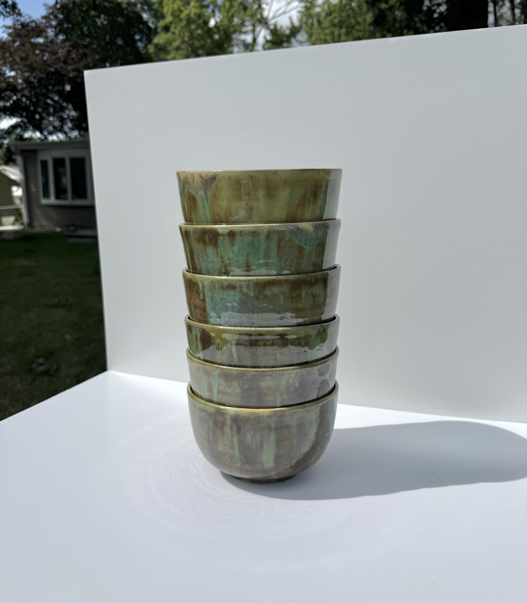
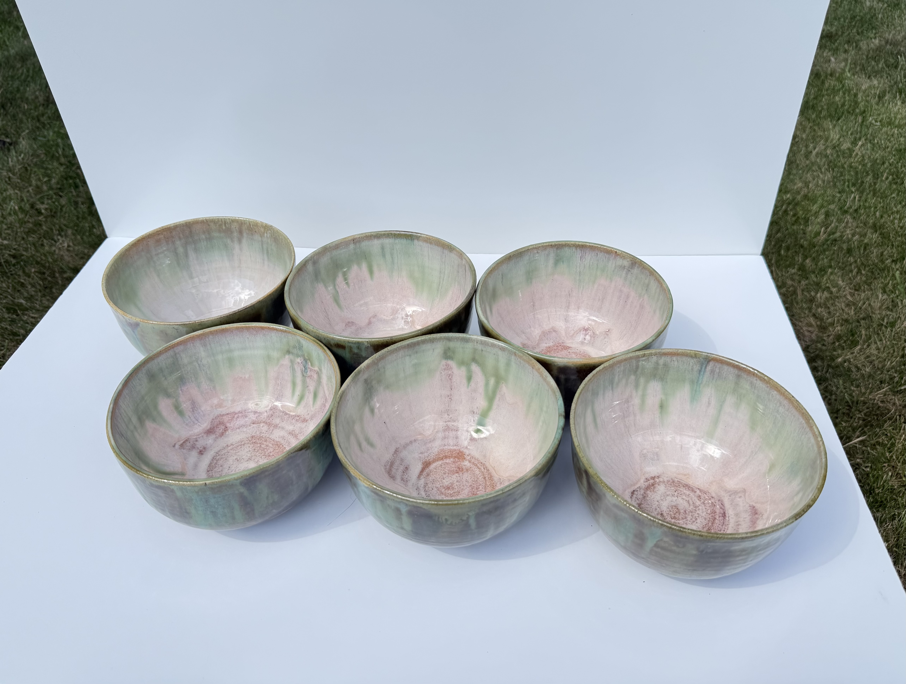
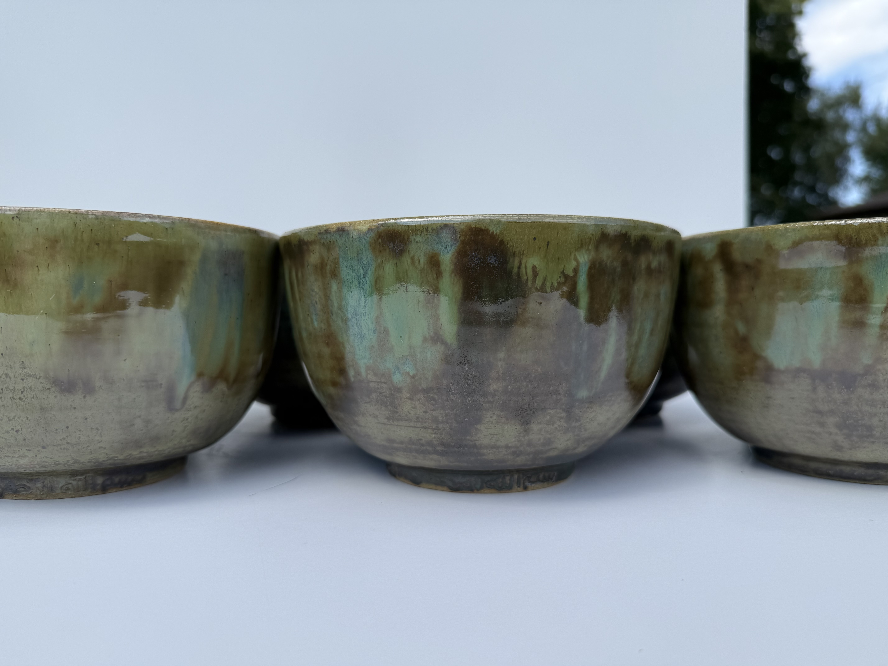
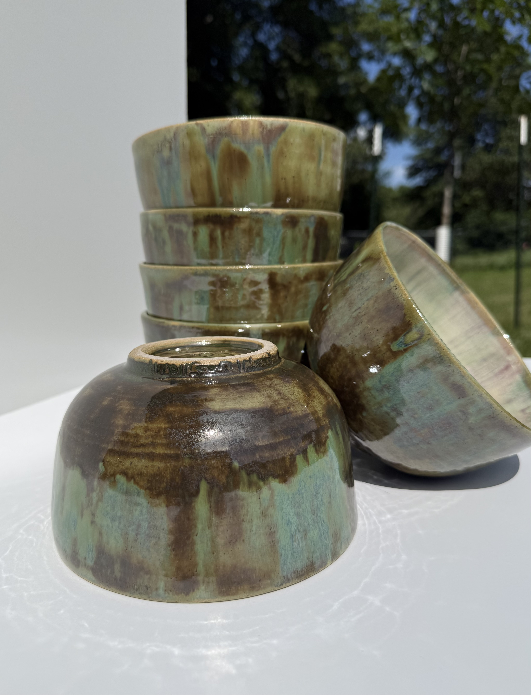
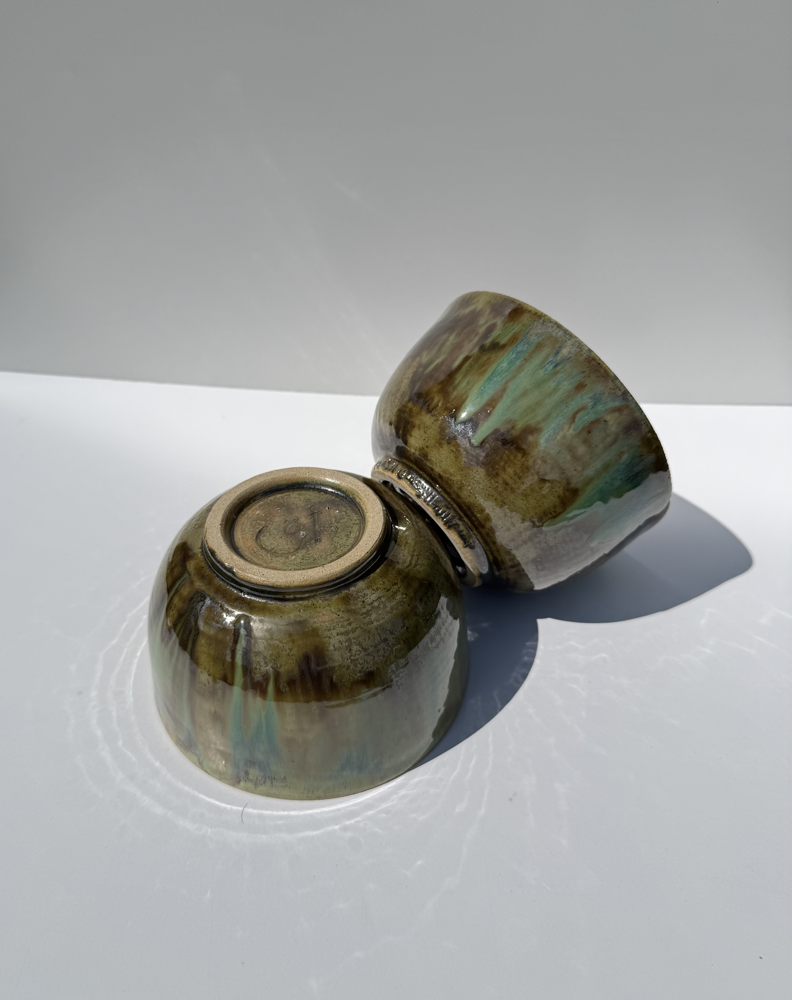
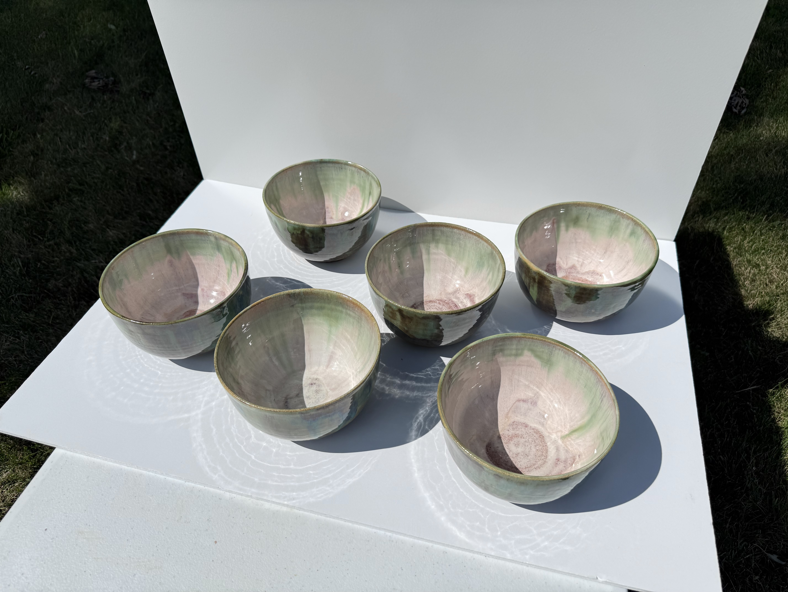
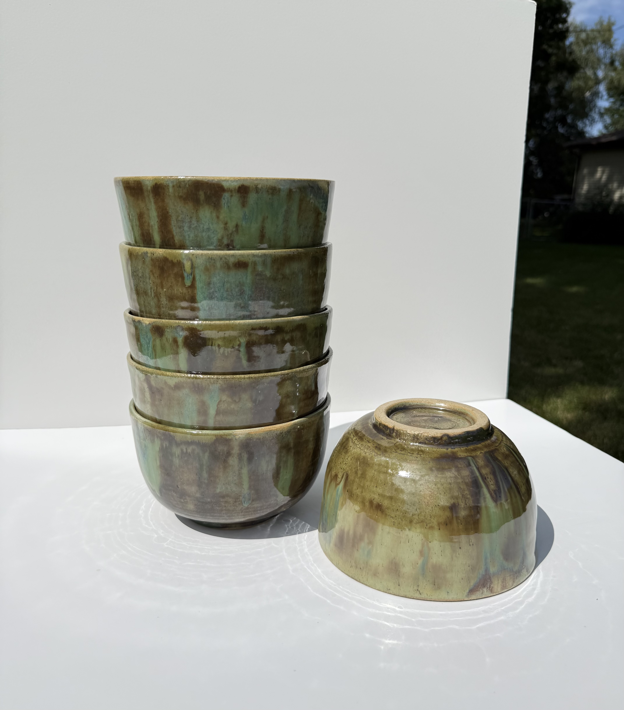

Moss Dinner Bowls
Not For Sale
Medium: Stoneware with Glaze
Dimensions: 4"H x 6.5"W x 3.75"D
Description: Set of six dome-shaped dinner bowls. Exterior features mossy green and brown glazes which also flow into the peach colored interiors. Foot of each bowl has the first words of the Quran, "bismallah ir-rahman ir-raheem" carved into it.
Further Information: I threw this set of six dinner bowls for my own apartment. The domed shape and small foot is one of my favorite profiles for a bowl. I made detailed measurements of each bowl and carefully carved the first words of the Quran "bismallah ir-rahman ir-raheem" into the foot of each bowl. Unfortunately, there was an issue with the community kiln during the bisque firing resulting in the bowls firing too hot and becoming fully vitrified. This meant the bowls could no longer absorb moisture and the glaze couldn't adhere to their surfaces properly. This is why the glaze seems thin in the center of the bowls and it looks like you can see raw clay at the base of the bowls. Thankfully, although the glaze looks thin, it fully covered the inside of the bowls and they are plenty food safe. This is one of the reasons why pottery is challenging, it is finicky and unpredictable, but when you get it right it is incredible rewarding.